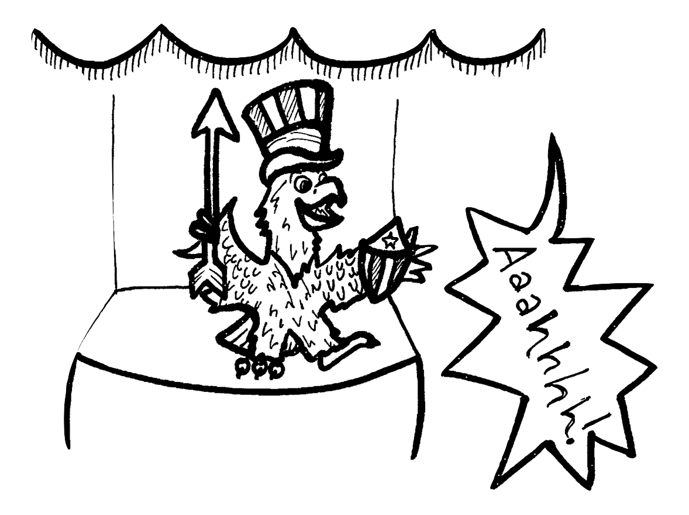

America Sings: 1 Death
On July 8, 1974, an 18-year-old employee was crushed to death between a revolving wall and a stationary platform inside the America Sings attraction. She was in the wrong place during a ride intermission; it was unclear whether this was due to inadequate training or a misstep as the ride had been open for only two weeks by this time. The ride closed for two days, and was subsequently refitted with breakaway walls.
